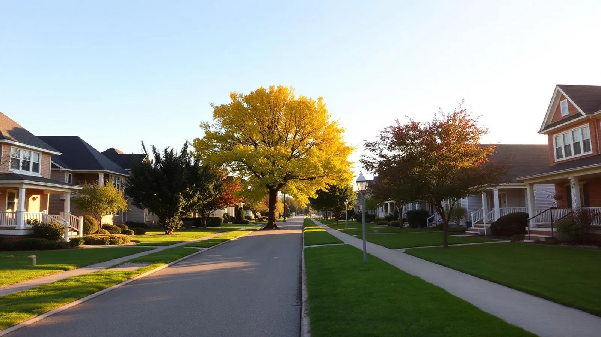

Request a lawn sign and help your neighbours learn about the campaign.
Request a lawn signI'm running for Ward 11 City Councillor in London, Ontario, to turn residents' concerns into practical action—with safer streets, reliable infrastructure and responsible spending. I'll listen, work collaboratively and keep you informed. Let's fix London, together.
Decisions about our neighbourhoods require more than just presence; they require a commitment to truly listening and acting on our concerns. For too long, that link has been missing.
My years of experience organizing tenants, helping families to find homes and supporting small business owners was built on a simple principle: putting the community first. I’m running to ensure that practical, lived experience, not bureaucracy, is what guides the decisions made on our behalf. It’s time for a new perspective that is truly accountable to you.
Better planning for road construction, with clear timelines so residents know when work is expected to begin. I also want to explore AI-powered pothole detection using City service vehicles to identify road problems in real time and help get them addressed faster.
Introduce a vacancy tax on qualifying empty homes and apartments to encourage unused housing to return to the market. Increasing available rental supply could help ease pressure on the rental market and improve housing availability for Londoners.
Launch a City's Grocery Store initiative, operated by the City of London with professional partners, focused on essential groceries at lower prices. The goal is to help low-income families save on everyday necessities and keep more money in their pockets.
Keep annual property-tax increases within a predictable 3-4% range, while maintaining essential infrastructure and accounting for inflation. I will push for greater financial discipline in municipal spending while ensuring London properly maintains its roads, water lines and sewer systems.
Protect London's Natural Heritage System, urban tree canopy, green spaces and Environmentally Significant Areas (ESAs). Invest in green infrastructure, flood mitigation and sustainable planning to help build a more climate-resilient city while respecting neighbourhood concerns.
Work toward parks, sidewalks, bike lanes and public spaces that everyone can safely enjoy. Support a coordinated approach to harmful public drug use that combines outreach, access to treatment and enforcement of public-safety rules, while keeping the needs of neighbourhoods at the centre.

Support the campaign by requesting a lawn sign, staying informed, and helping spread the message.